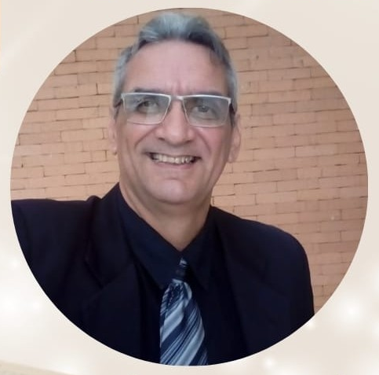

Há momentos em que você continua funcionando por fora, mas por dentro já não se reconhece da mesma forma. Paulo Roberto reúne mais de 30 anos de experiência em uma escuta humana, individual e sem fórmulas prontas.
Atendimento online • Brasil e exterior • mais de 30 anos de experiência
Às vezes ele aparece como sobrecarga, perda de sentido, ansiedade, conflitos, culpa, relações difíceis ou a sensação de que você precisa dar conta de tudo sozinho.
Algo mudou e está difícil compreender o que sente, pensa ou deseja.
Muita gente tenta suportar por muito tempo antes de procurar ajuda.
Há momentos em que falar e compreender o que está acontecendo faz diferença.

Ao longo de três décadas, Paulo construiu uma forma de atendimento em que a pessoa vem antes da técnica. A história, o momento e a necessidade de cada paciente orientam a condução do processo.
Psicanálise, TCC, Logoterapia e recursos interativos podem integrar o acompanhamento como ferramentas, mas o centro continua sendo a pessoa, sua trajetória e a busca por resgate de si mesma.
A Estrada é uma experiência guiada de autopercepção. Ao percorrê-la, você encontrará situações que convidam a observar como percebe seus caminhos, escolhas, obstáculos e possibilidades hoje.
Não é diagnóstico. É um convite à reflexão e pode ser uma boa forma de começar a olhar com mais atenção para o seu momento atual.
Converse diretamente com Paulo para entender como funciona o atendimento e verificar a disponibilidade de agenda.
Falar pelo WhatsApp